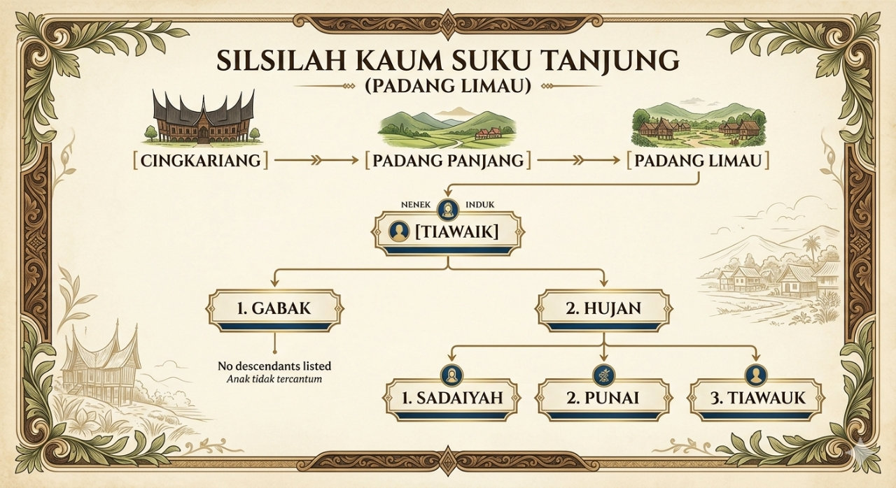
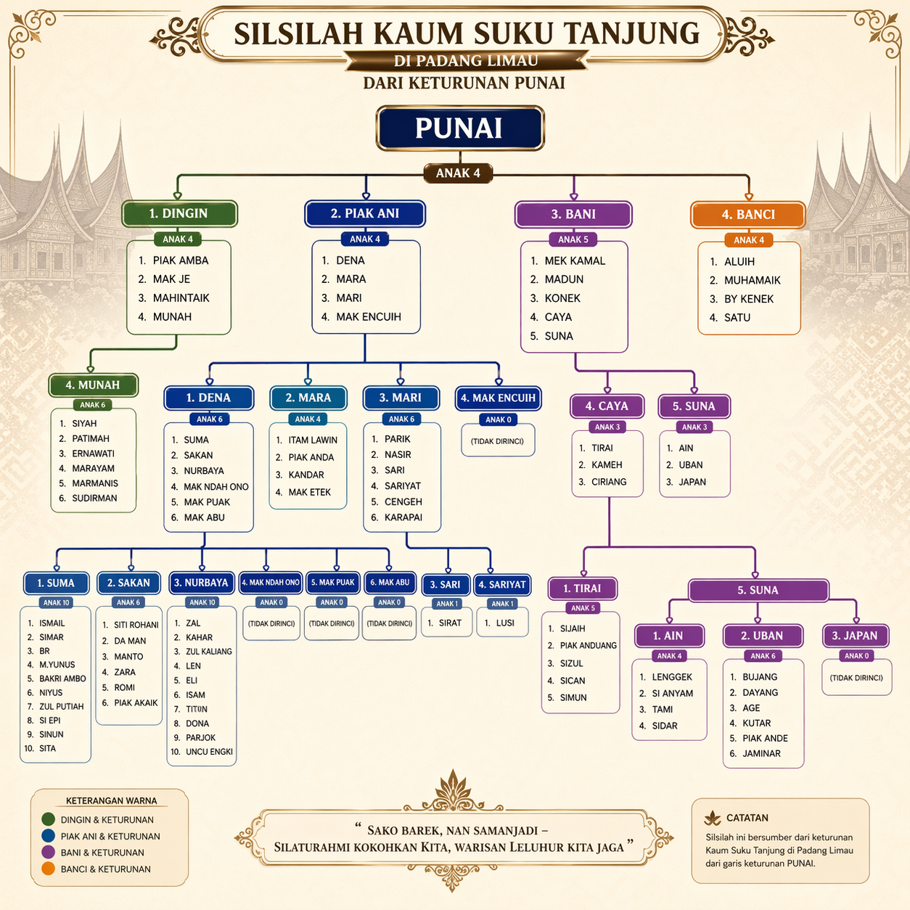
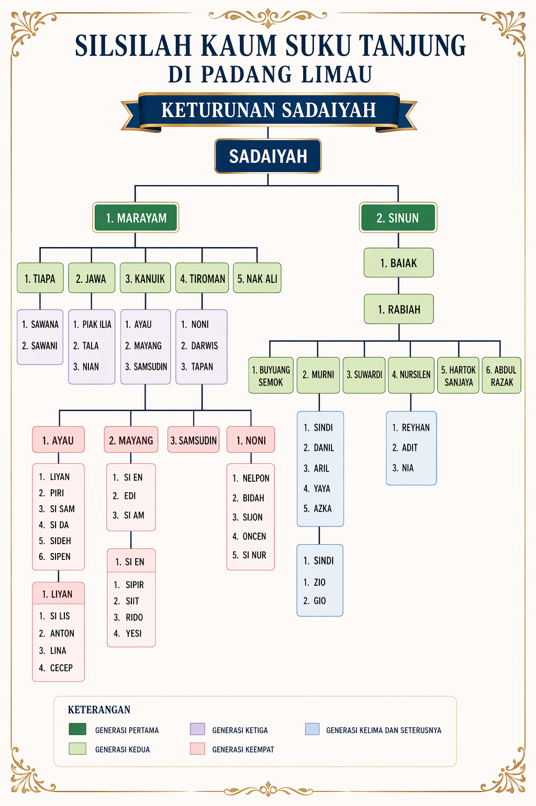
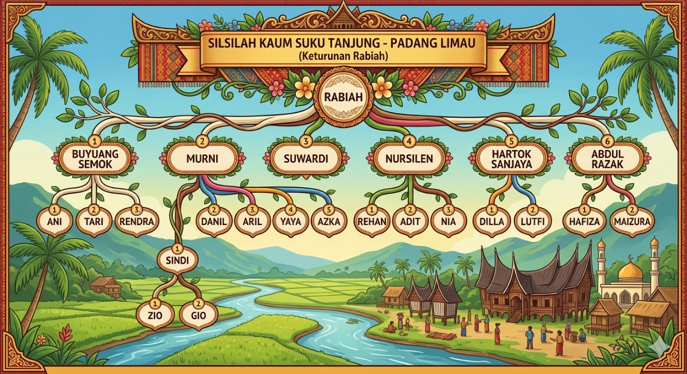
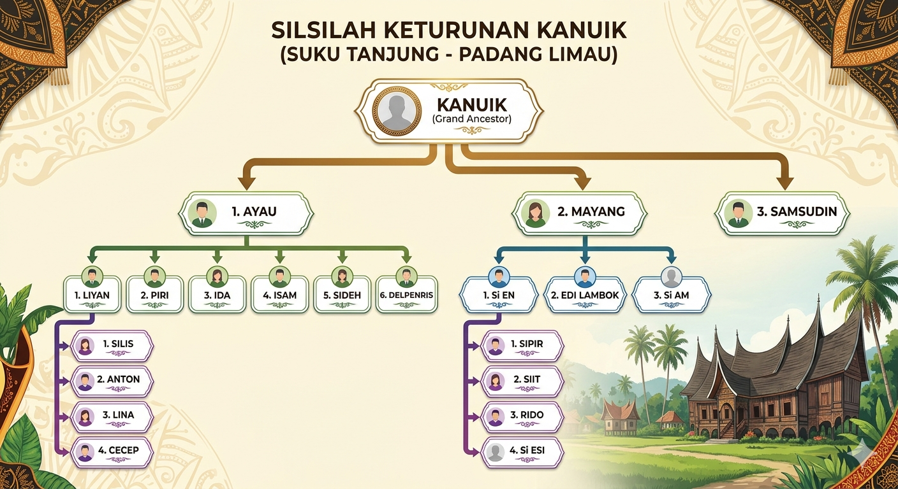
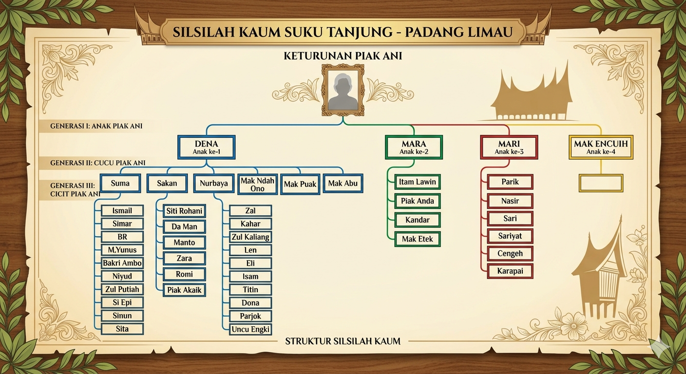

Padang Limau - Minangkabau
Menelusuri jejak leluhur yang mulia dari Cingkariang menuju Padang Panjang, kemudian ke Kampuang Tanjuang, dan akhirnya bermukim di Padang Limau. Sebuah warisan keturunan yang terjaga dalam adat dan budaya Minangkabau.
Warisan Leluhur yang Terjaga
Suku Tanjung (Tanjuang) merupakan salah satu suku (klan) terbesar pada Etnis Minangkabau. Suku ini tersebar hampir di seluruh wilayah Minangkabau dan daerah perantauan, dengan akar yang kuat dari Luhak Nan Tigo.
Perjalanan nenek moyang kami dimulai dari Cingkariang, kemudian melanjutkan perjalanan ke Padang Panjang, sebelum akhirnya menetap di Kampuang Tanjuang dan Padang Limau. Setiap langkah perjalanan ini meninggalkan jejak sejarah yang tak ternilai, terjaga dalam silsilah yang kami hormati.
Dengan sistem adat matrilineal yang menjadi ciri khas Minangkabau, Suku Tanjung tetap mempertahankan nilai-nilai luhur adat basandi syarak, syarak basandi Kitabullah dalam setiap aspek kehidupan.
Dokumentasi Pohon Keluarga dan Sejarah






Dari Cingkariang ke Padang Limau